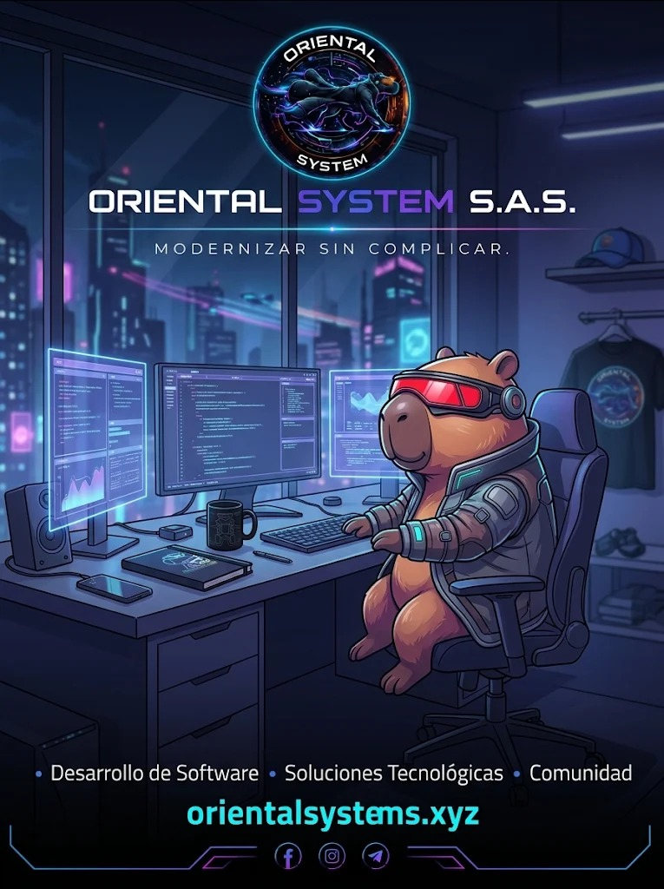

Oriental System S.A.S. se dedica al desarrollo, implementación y mantenimiento de sistemas informáticos y herramientas digitales adaptadas a las necesidades de cada organización.
DESARROLLO DE SOFTWARE · MONTEVIDEO, URUGUAY
Modernizar
sin complicar.
Creamos soluciones informáticas pensadas para mejorar procesos reales, facilitar el trabajo de las personas y acompañar la transformación digital de las organizaciones.
Oriental System S.A.S.
Soluciones tecnológicas a medida
LA EMPRESA
Tecnología que se adapta al trabajo, no al revés.
Misión
Generar valor real en el sector público mediante tecnología que mejore la forma en que las organizaciones operan y brindan sus servicios.
Visión
Ser un socio tecnológico que ayude a las organizaciones a trabajar mejor, con eficiencia, confianza y una mirada sostenible.
NUESTRO EQUIPO
Personas detrás de cada solución.
Compartimos una forma de trabajar: escuchar, colaborar y transformar ideas en herramientas útiles.
Ética y transparencia
Profesionalismo
Trabajo en equipo
Compromiso
Confidencialidad
Responsabilidad
Innovación
QUÉ HACEMOS
Soluciones pensadas para necesidades concretas.
Desarrollo de software
Sistemas web y soluciones a medida diseñadas a partir de requerimientos reales.
Modernización de procesos
Digitalización y mejora de tareas que aún dependen de procesos manuales o herramientas antiguas.
Implementación y soporte
Puesta en funcionamiento, documentación, capacitación, mantenimiento y acompañamiento posterior.
NUESTRO ENFOQUE
Del primer encuentro a la puesta en marcha.
01
Entender
Relevamos cómo se trabaja actualmente y qué necesita realmente la organización.
02
Involucrar
Buscamos que quienes utilizarán el sistema participen en pruebas y evaluaciones.
03
Simplificar
Priorizamos sistemas claros y fáciles de aprender, evitando complejidad que no aporte valor.
04
Acompañar
La entrega incluye documentación, capacitación y soporte para facilitar la adopción.
PROYECTOS
Una solución aplicada a una necesidad real.
GESTIÓN · SALUD · DIGITALIZACIÓN
SIGSM
Sistema Informático de Gestión de Servicios Médicos
Nuestra solución para la gestión de servicios médicos, diseñada a partir de las necesidades del Hospital de Clínicas. Centraliza la información y facilita la coordinación del trabajo entre las distintas áreas.
Traslados
Solicitud, asignación de recursos y seguimiento del estado de cada traslado.
Documentación
Documentos PDF organizados por categoría y acceso mediante códigos QR.
Encuestas
Respuestas anónimas y consulta de resultados para apoyar la mejora de los servicios.
SOFTWARE · TECNOLOGÍA · COMUNIDAD
Conocé nuestro lado creativo.
La tecnología también nos conecta. Compartimos la identidad de Oriental System y las ideas que nos impulsan a crear.
Descargar flyer

CONTACTO
¿Tenés un proceso que podría funcionar mejor?
Contanos qué necesita tu organización. Podemos analizar el problema y evaluar una solución tecnológica adecuada.